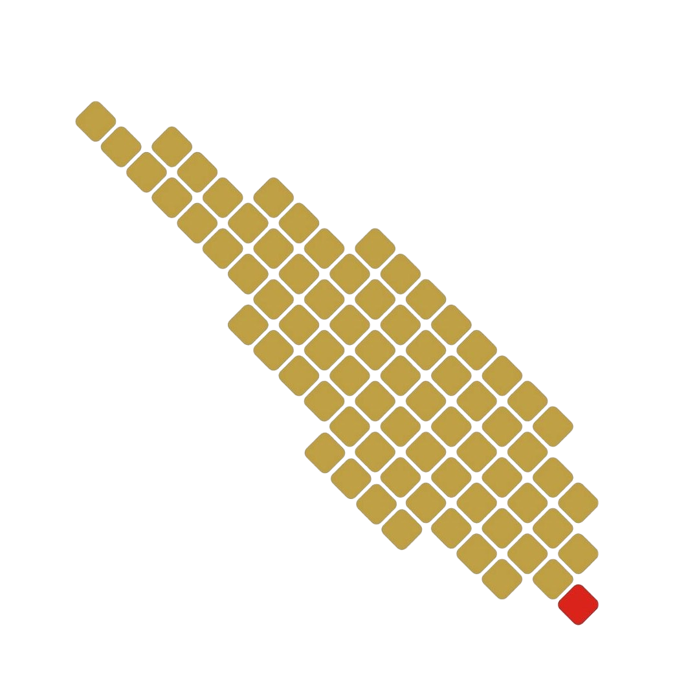

SISTEM MONITORING KESEHATAN EKOSISTEM MANGROVE
Desa Sidodadi, Kabupaten Pesawaran, Lampung
Pilih Tahun
2021
2022
2023
2024
2025
2026
Status Data
Memuat data tahun 2021...
⏳ Sedang memuat data...
Klasifikasi Kesehatan Mangrove
1
— Sangat Tidak Sehat
2
— Tidak Sehat
3
— Sedang
4
— Sehat
5
— Sangat Sehat
Luas Mangrove
Informasi
Wilayah:
Desa Sidodadi, Kecamatan Teluk Pandan, Kabupaten Pesawaran, Provinsi Lampung.
Data:
Klasifikasi kesehatan ekosistem mangrove tahun 2021–2026.
Keterangan:
Klik area mangrove pada peta untuk melihat kelas kesehatan.
Dibuat oleh:
Ahmad Fatih
Ida Hartati
Jhotua Runggu Matius S
Yesi Kusuma Dewi
M Alfaried Zalmiansyah